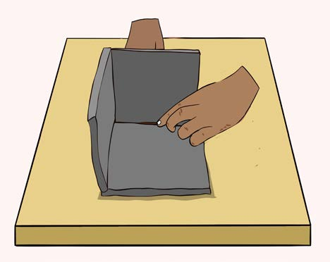
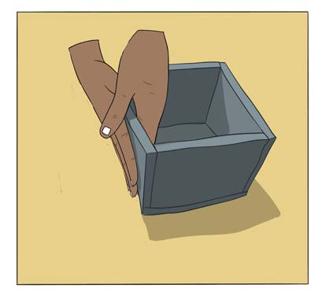
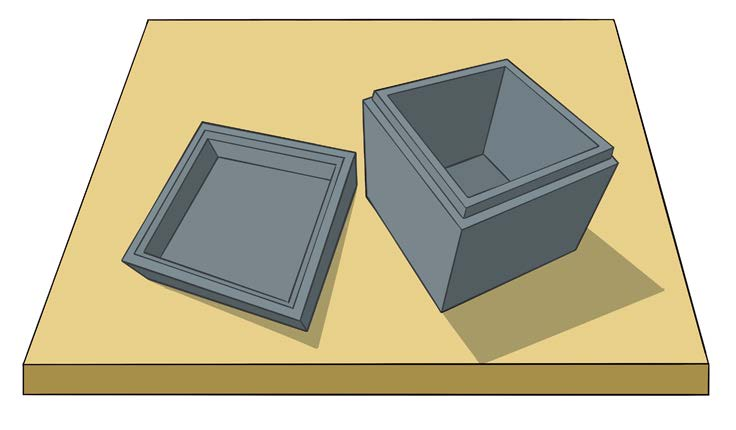

(v) Unganisha vipande hivyo kwa kutumia udongo wa mfinyanzi, kama inavyoonekana katika Kielelezo namba 4;


(vi) Lainisha sehemu zilizoungwa ili zisiache uwazi; na
(vii) Weka umbo kivulini kwa muda mfupi ili likauke kiasi na liwekee nakshi, kisha liweke tena kivulini hadi likauke kabisa, kama inavyoonekana katika Kielelezo namba 5.
